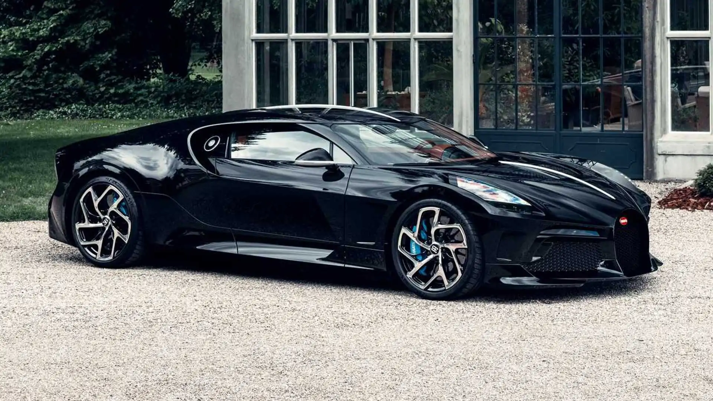
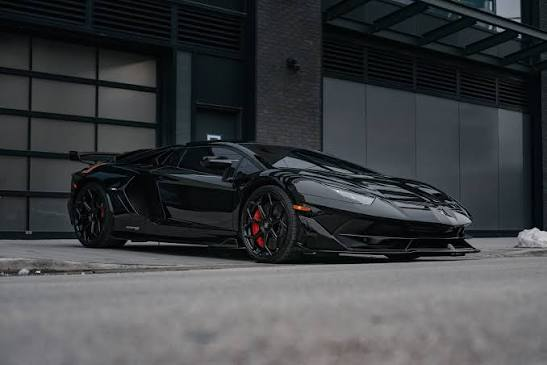
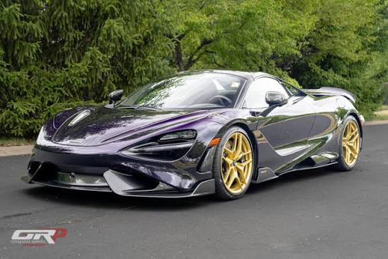

Top những siêu xe ngầu nhất thế giới
Bugatti la voiture noire

- Điểm nổi bật: Thiết kế độc bản (chỉ duy nhất 1 chiếc toàn cầu) chế tác thủ công hoàn toàn từ sợi carbon nguyên khối, lấy cảm hứng từ dòng xe cổ huyền thoại Type 57 Atlantic. Xe sở hữu 6 ống xả hầm hố cùng khối động cơ W16 8.0L đạt công suất lên đến 1.500 mã lực.
- Giá trị: Khoảng 18,7 - 18,9 triệu USD (giá sau thuế tại nước ngoài lên tới gần 19 triệu USD)
ấn vào đây để xem thêm
Lamboghini aventador SVJ

- Điểm nổi bật: Đỉnh cao cuối cùng của kỷ nguyên động cơ V12 hút khí tự nhiên thuần túy từ nhà "Bò tót" trước khi chuyển giao sang dòng xe kế nhiệm. Xe nổi tiếng với việc từng phá kỷ lục hoàn thành vòng đua Nürburgring nhờ hệ thống khí động học chủ động ALA 2.0 (Aerodinamica Lamborghini Attiva) có khả năng điều chỉnh luồng khí ở cánh gió chỉ trong 0,5 giây để giảm lực cản hoặc tăng lực ép. Xe sử dụng hệ dẫn động 4 bánh (AWD) mang lại lực kéo và độ bám đường vượt trội.
- Giá trị: Giá xuất xưởng cơ bản từ 517.770 USD, nhưng giá trị thị trường hiện tại thường nằm trong khoảng 750.000 USD (thậm chí các phiên bản đặc biệt như SVJ 63 lên tới 1,3 - 2 triệu USD). Khi nhập khẩu tư nhân về Việt Nam, giá lăn bánh của SVJ dao động từ 60 đến 70 tỷ đồng tùy theo phiên bản Coupe hay Roadster do phải chịu mức thuế tiêu thụ đặc biệt rất cao cho động cơ dung tích lớn 6.5L.
ấn vào đây để xem thêm
Mr laren 765lt

- Điểm nổi bật: Phiên bản đuôi dài "Longtail" siêu hiệu năng, tập trung tối ưu hóa trọng lượng khi nhẹ hơn mẫu 720S đến 80 kg nhờ sử dụng kính mỏng, mâm rèn siêu nhẹ và hệ thống xả titanium. Xe sở hữu cánh gió sau chủ động lớn tăng 25% lực ép xuống mặt đường và sử dụng lốp chuyên dụng Pirelli P Zero Trofeo R. Xe được trang bị động cơ V8 4.0L tăng áp kép mang lại khả năng tăng tốc cực kỳ gai góc, pin-sharp trên đường đua.
- Giá trị: Giá niêm yết ban đầu khoảng 358.000 - 375.000 USD, giá trị giao dịch trên thị trường xe cũ hiện nay dao động khoảng 550.000 - 643.000 USD tùy tình trạng. Tại thị trường Việt Nam, giá trị sau khi lăn bánh của mẫu xe giới hạn này ước tính vượt mức 35 tỷ đồng
ấn vào đây để xem thêm